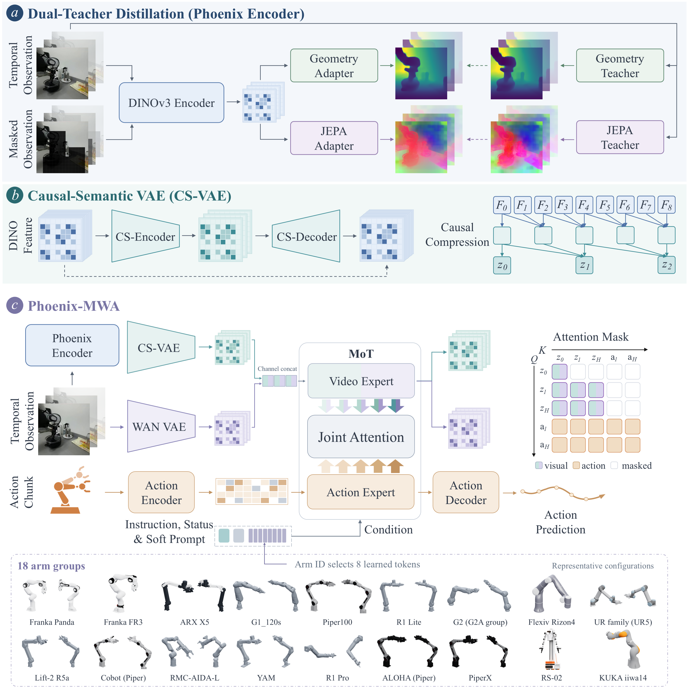
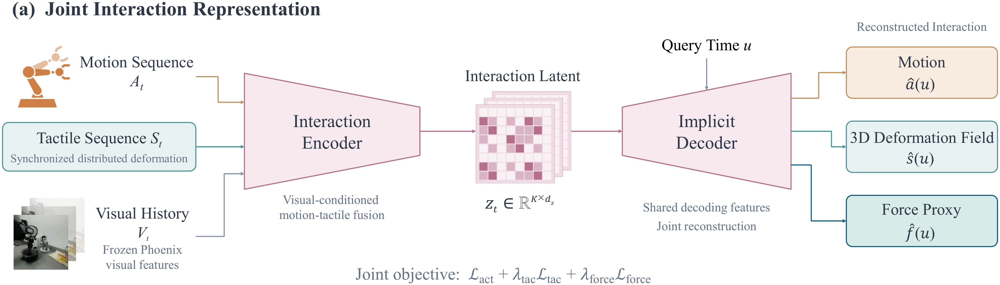
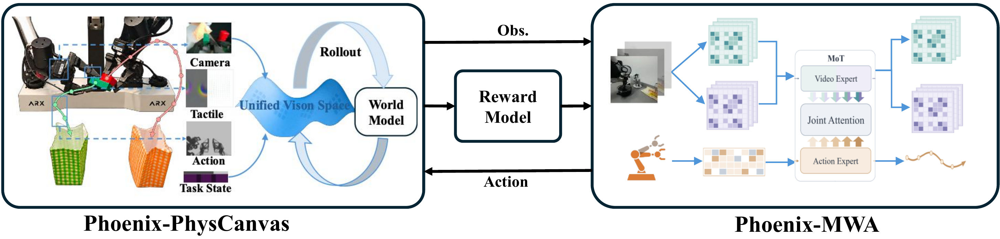
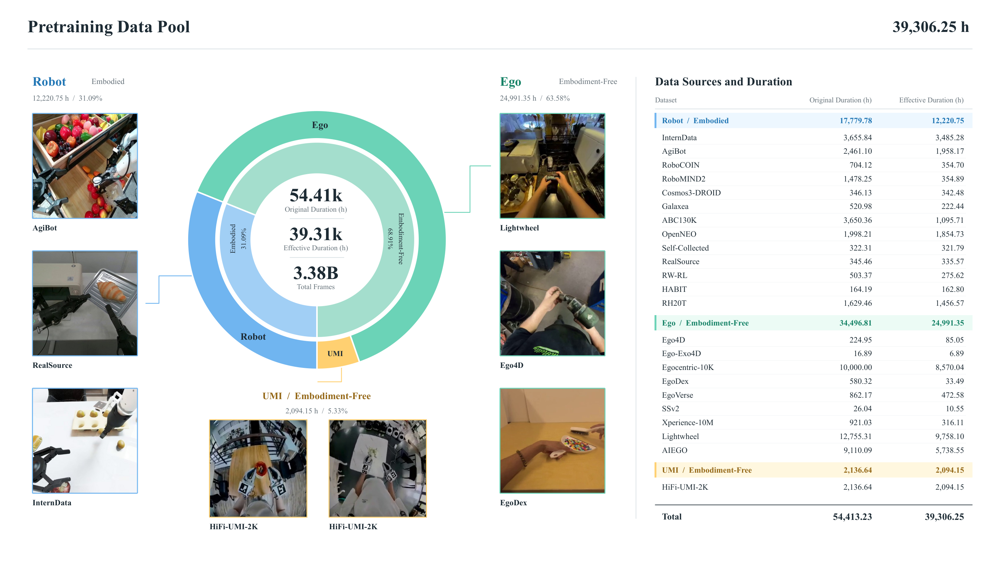
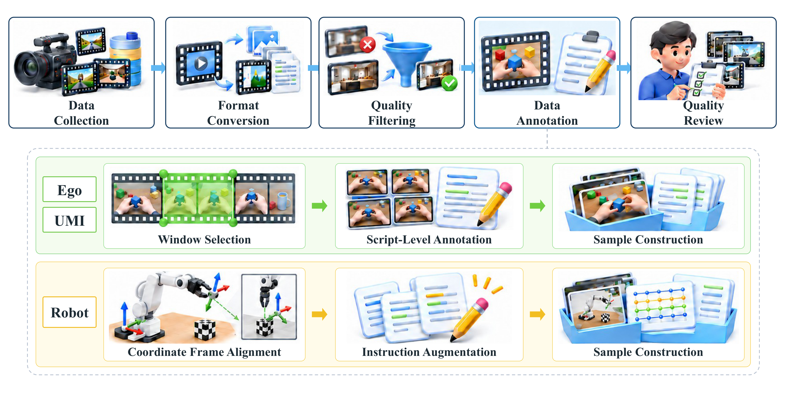
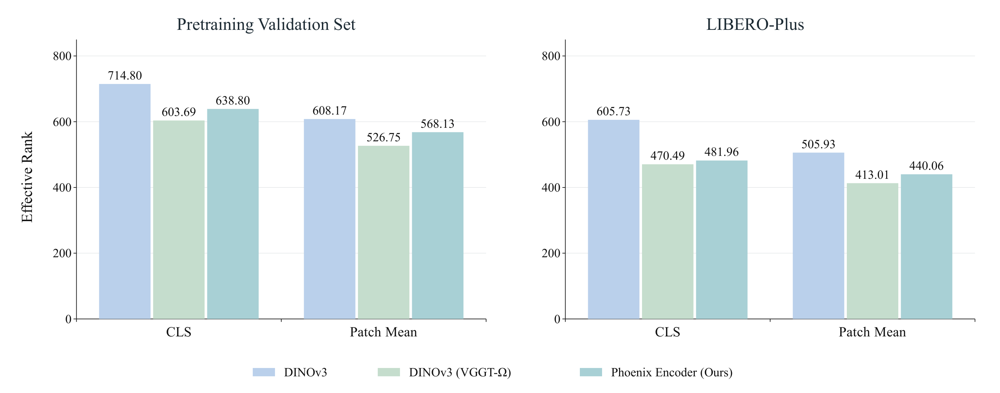

Phoenix Encoder
以 DINOv3 ViT-L/16 为骨干，通过双教师蒸馏学习 VGGT-Ω 的几何知识和 V-JEPA 的时序知识。
机器人操作学习 · 技术报告 · 2026.10.13
从操作视频预训练到真机接触控制
Phoenix-MWA 联合预测视觉状态与动作，Phoenix-ILA 学习接触技能，Phoenix-PhysCanvas 支持世界模型中的强化学习。
Phoenix-MWA，在各基准对应的后训练配置下评估。
Phoenix 研究机器人如何从大量操作记录中学习，并将这些经验用于抓取、擦拭和插入等任务。这项工作由无界动力与中科院自动化所强化学习团队联合开展，包括一个预训练世界动作模型，以及两种后训练方法：从示范中学习接触技能、在世界模型中通过交互改进策略。
Phoenix-MWA 根据当前图像、机器人状态和语言指令，联合预测未来视觉状态与动作。Phoenix Encoder 从几何和时序教师中蒸馏特征，CS-VAE 将特征压缩为适合生成的潜变量。数据池包含机器人示范、第一人称视频和 UMI 记录，共约 5.44 万小时原始视频、3.93 万小时有效数据和 33.8 亿原始帧。
在各基准对应的后训练配置下，Phoenix-MWA 在 LIBERO-Plus、LIBERO-Pro、RoboCasa-GR1 和 Bench2Dex 上分别取得 94.63%、66.48%、82.67% 和 45.6% 的成功率，在所报告的比较中排名第一；在 RoboTwin 2.0 C2R 和 RoboDojo-RealWorld 上分别取得 72.42% 和 26.11%。具体设置与对比方法见实验部分。
Phoenix-ILA 从同步的运动与触觉示范中学习交互潜变量，用于削皮、擦拭等接触密集任务。Phoenix-PhysCanvas 根据动作预测视觉与触觉反馈，让策略在仿真中比较不同动作的结果，并通过强化学习更新。后训练后的策略再回到真机上评估。
01 / Method
先学习和压缩视觉表征，再联合生成未来状态与动作；后训练分别使用接触示范和世界模型交互。
以 DINOv3 ViT-L/16 为骨干，通过双教师蒸馏学习 VGGT-Ω 的几何知识和 V-JEPA 的时序知识。
压缩高维视觉特征，以因果时序编码保留语义与空间结构，减少冗余并避免未来信息泄漏。
在视觉动态与语义潜空间中联合预测未来状态和动作，将环境演化与操作行为联系起来。

削皮与擦拭需要工具持续贴合表面，仅沿着视觉上合理的轨迹移动，仍可能失去接触。Phoenix-ILA 用交互潜变量替换直接动作目标，将运动与触觉变化共同纳入后训练。
第一阶段，Interaction Encoder 分别编码运动和触觉，通过自注意力交换信息，再用交叉注意力读取多视角视觉特征，最后进行时序压缩。带时间条件的解码器在查询时刻重建运动、三维触觉形变场和受力代理。解码器不单独读取视觉输入，重建所需信息必须经过交互潜变量。
第二阶段，固定交互编解码器，将示范片段编码为归一化潜变量目标。通过条件流匹配更新动作分支、输入输出投影和时序位置编码，视觉编码器与视频分支保持固定。推理使用当前观测和历史触觉，不需要未来触觉测量；生成的潜变量被解码为关节目标，机器人执行短前缀后重新观测与规划。

固定示范不一定覆盖不同接近方式或物体位置偏差。Phoenix-PhysCanvas 为 Phoenix-MWA 提供交互式后训练环境，让策略尝试动作、观察结果，再根据任务奖励更新。
模型从真实机器人轨迹学习，将时间对齐的多视角 RGB、触觉图像和触觉位移组织到统一空间画布。机器人运动提供与相机对齐的几何条件，预训练视频模型通过条件流匹配预测后续多模态观测，视觉编解码器保持固定。
强化学习从真实初始观测出发，策略输出动作，PhysCanvas 返回新的视觉与触觉反馈。从相同初始条件采样多条 rollout，用奖励模型评价任务完成情况，再通过组内相对优势进行 GRPO 更新。最终收益在物理机器人上检验。

02 / Pretraining Data
对 Robot、Ego 和 UMI 记录进行格式转换、质量筛选、时序标注和坐标对齐，使语言、观测与动作对应同一段操作。

数据先转为 LeRobot V3，明确位置单位和朝向定义，再检查视频时间戳、状态序列和任务边界。质量筛选检查解码失败、异常时间戳、视觉质量、异常运动和重复记录。机器人静止检测依据实测状态，同时检查相邻变化与累计变化，保留慢速运动；只裁剪任务两端的冗余静止片段，保留任务内部的必要停顿。
第一人称数据的脚本级标注记录整体任务、场景及局部手部动作的时间范围，使窗口描述保留动作顺序和双手分工。机器人数据在工作空间与末端执行器两层进行坐标对齐；语言增强保留物体、手臂分工、空间关系和先后约束。先按原始 episode 划分训练与验证，再构建窗口，避免重叠观测泄漏。

03 / Benchmarks
报告 LIBERO-Plus、LIBERO-Pro、RoboCasa-GR1、RoboTwin 2.0 C2R、Bench2Dex 和 RoboDojo-RealWorld 六项结果。各基准采用对应的后训练与评估设置。
Seven Distribution Shifts
相机、初始状态、语言、光照、背景、噪声与布局扰动。
预训练后，总成功率提高 6.47 pp。
Object · Position · Semantics · Task
从物体、位置、语义与任务维度考察泛化能力。
Articulated Objects · Pick & Place
关节物体操作与抓放任务。
数据来自技术报告第 4 节；总分提升不代表每项扰动均有提升。完整表保留原报告的分组、加粗和下划线标记。
Bench2Dex 覆盖 12 种机械臂与灵巧手组合、26 项任务与本体设置，测试物体位姿、桌面高度、背景、光照、干扰物和相机位姿变化。Phoenix-MWA 在等变性（Equi.）、不变性（Inv.）和联合（Full）评估中的成功率分别为 38.5%、44.1% 和 45.6%。四个评估通道的平均成功率为 45.6%，比所比较的最强基线高 17.3 个百分点。
| Metric | ACT | DP | π₀.₅ | GR00T N1.5 | Phoenix-MWA (w. Pretrain) |
|---|---|---|---|---|---|
| None | 29.5% | 12.9% | 35.5% | 48.5% | 54.2% |
| Equi. | 15.4% | 6.3% | 21.2% | 18.8% | 38.5% |
| Inv. | 14.0% | 5.2% | 26.7% | 26.0% | 44.1% |
| Full | 13.0% | 3.8% | 25.5% | 19.8% | 45.6% |
| SR | 18.0% | 7.1% | 27.2% | 28.3% | 45.6% |
| LSCR | 36.5% | 23.0% | 44.2% | 47.3% | 65.6% |
| Task | Embodiment | ACT | DP | π₀.₅ | GR00T N1.5 | Phoenix-MWA (w. Pretrain) | |||||
|---|---|---|---|---|---|---|---|---|---|---|---|
| SR | LSCR | SR | LSCR | SR | LSCR | SR | LSCR | SR | LSCR | ||
| Baking Tray Prep | IIWA7 + Sharpa | 6.0% | 11.6% | 2.0% | 7.9% | 27.5% | 38.4% | 10.0% | 29.3% | 30.0% | 61.8% |
| Canned Food Tray Arrangement | 9.5% | 34.6% | 0.0% | 14.8% | 12.0% | 38.8% | 12.5% | 37.3% | 13.5% | 52.6% | |
| Jigsaw Puzzle Assembly | 0.0% | 12.5% | 0.0% | 6.3% | 0.0% | 8.4% | 5.0% | 30.3% | 0.0% | 27.6% | |
| Gaming Desk Setup | JAKA ZU7 + DexHand021 | 31.0% | 46.0% | 9.0% | 30.7% | 33.5% | 49.3% | 59.5% | 72.2% | 52.0% | 73.0% |
| Medicine Shoebox Pack | Panda + Orca | 7.5% | 21.5% | 0.0% | 9.3% | 21.5% | 39.8% | 13.0% | 26.2% | 49.5% | 65.5% |
| Tool Box Loading | 20.0% | 37.5% | 16.5% | 39.8% | 72.0% | 86.0% | 40.0% | 51.0% | 68.5% | 84.2% | |
| Sports Ball Cup Sort | Panda + Allegro | 2.0% | 2.5% | 0.5% | 4.4% | 21.5% | 33.6% | 9.0% | 21.5% | 23.0% | 43.1% |
| Faucet Cup Water Fill | RM65 + Revo2 | 7.5% | 35.4% | 4.0% | 14.0% | 15.5% | 40.5% | 33.0% | 55.0% | 35.5% | 66.5% |
| Stationery Category Sorting | 1.5% | 23.1% | 2.0% | 18.5% | 0.0% | 2.3% | 3.0% | 16.9% | 24.5% | 55.5% | |
| Bimanual Piano Melody | xArm7 + Ability | 4.0% | 4.5% | 0.5% | 0.5% | 7.5% | 16.0% | 23.0% | 23.5% | 4.0% | 6.2% |
| Wine Glass Plate Balance | 26.0% | 72.0% | 3.5% | 39.8% | 35.0% | 76.2% | 28.5% | 72.5% | 40.0% | 81.8% | |
| Cleaner Box Loading | xArm7 + LEAP | 33.0% | 76.2% | 9.0% | 32.8% | 55.0% | 88.5% | 47.0% | 82.3% | 72.5% | 95.8% |
| Shoebox Accessory Pack | 30.0% | 56.3% | 9.5% | 35.2% | 51.0% | 68.3% | 40.5% | 60.3% | 64.5% | 79.8% | |
| Toilet Lid Cleaner Pour | 34.0% | 50.3% | 8.5% | 23.5% | 45.5% | 53.3% | 45.0% | 63.3% | 74.5% | 84.2% | |
| Breadbasket Fast-Food Loading | UR5 + RH5DG2 | 10.5% | 15.8% | 4.5% | 7.3% | 12.5% | 15.6% | 9.0% | 13.5% | 65.5% | 71.9% |
| Citrus Plate Loading | 51.5% | 69.9% | 22.5% | 44.4% | 56.5% | 67.3% | 59.0% | 73.1% | 92.5% | 96.1% | |
| Fridge Wine Interhand Pour | 11.0% | 48.5% | 2.5% | 41.8% | 8.5% | 36.1% | 21.0% | 58.6% | 64.5% | 82.1% | |
| Fruit Bowl Loading | UR5 + RH56DFX | 37.0% | 62.0% | 18.0% | 47.8% | 38.5% | 71.6% | 32.5% | 68.1% | 60.0% | 82.4% |
| Screwdriver Box & Hammer | 24.5% | 56.2% | 20.5% | 49.0% | 33.0% | 57.5% | 48.0% | 73.7% | 64.0% | 85.9% | |
| Trash Disposal | 18.5% | 30.3% | 14.0% | 21.5% | 41.0% | 53.7% | 34.5% | 47.8% | 44.5% | 64.8% | |
| Fridge Fruit Shelf Sorting | UR5 + Shadow | 0.5% | 2.6% | 0.0% | 15.1% | 6.0% | 29.6% | 1.0% | 19.6% | 30.0% | 49.8% |
| Soup Serving | 1.0% | 11.5% | 0.0% | 3.1% | 0.0% | 14.0% | 3.0% | 13.9% | 3.0% | 18.8% | |
| Frypan Stand & Pour | UR5 + Schunk | 19.0% | 51.2% | 14.5% | 30.0% | 15.0% | 33.3% | 54.5% | 72.3% | 60.0% | 85.8% |
| Microwave Bowl Loading | 62.5% | 74.9% | 21.0% | 48.6% | 70.0% | 78.4% | 70.5% | 82.0% | 90.5% | 94.1% | |
| Ball Box Loading | UR5 + Wuji | 8.5% | 10.4% | 0.0% | 7.1% | 14.0% | 19.4% | 23.0% | 37.1% | 9.5% | 19.9% |
| Condiment Box Loading | 10.5% | 31.8% | 1.0% | 4.2% | 15.0% | 33.2% | 10.5% | 27.7% | 49.5% | 76.7% | |
| Task mean (26 tasks) | 18.0% | 36.5% | 7.1% | 23.0% | 27.2% | 44.2% | 28.3% | 47.3% | 45.6% | 65.6% | |
04 / Real-World Manipulation
八段原速演示涵盖多步骤操作、持续接触和精细对齐。RTC 与异步执行让模型在机器人运动时准备后续动作，衔接相邻动作段。统计成绩见对应实验。
视频暂时无法播放，请尝试打开原视频。
05 / Analysis
分别检查视觉表征、未来视频预测、接触后训练和世界模型强化学习的实验结果。
从预训练验证集与 LIBERO-Plus 各抽取 10,000 帧，三个编码器共享相同采样帧。通过对中心化 CLS 和 Patch Mean 特征矩阵进行奇异值分解，计算 Effective Rank，衡量特征变化在主方向上的分布均衡程度。

三组统一在 LIBERO 后训练 20k steps，对 LIBERO-Plus 中预先固定的 200 个共同完整窗口评分。每个窗口只评估 8 个未来帧，主视角、腕部视角与窗口之间等权平均。
| Model | PSNR ↑ | SSIM ↑ | LPIPS ↓ | DINO-GT ↑ | CLIP-GT ↑ |
|---|---|---|---|---|---|
| FastWAM | 20.75 | 0.77 | 0.19 | 85.33 | 91.50 |
| Phoenix-MWA (w/o. Pretrain) | 20.96 | 0.78 | 0.17 | 86.06 | 91.46 |
| Phoenix-MWA (w. Pretrain) | 23.31 | 0.81 | 0.12 | 90.28 | 93.09 |
相比 FastWAM，预训练模型的 PSNR 提高 2.56 dB，LPIPS 降低 36.84%。
像素保真度、感知相似性与语义一致性共同改善。↑ 越高越好，↓ 越低越好。DINO-GT 与 CLIP-GT 为余弦相似度 × 100。
在削皮、擦拭盘子任务上，比较直接动作生成与交互潜变量生成。Fext L1 衡量由触觉形变导出的合力代理与专家参考的偏差。
| 方法 | 削皮 SR ↑ | 削皮 Fext L1 ↓ | 擦拭 SR ↑ | 擦拭 Fext L1 ↓ |
|---|---|---|---|---|
| FastWAM | 10% | 2.01 ± 0.53 | 50% | 1.54 ± 0.35 |
| Phoenix-MWA† | 20% | 1.85 ± 0.63 | 75% | 1.62 ± 0.41 |
| Phoenix-MWA-ILA† | 40% | 1.22 ± 0.51 | 90% | 1.38 ± 0.45 |
采用交互潜变量后，削皮成功率 20% → 40%，擦拭成功率 75% → 90%。
两项任务的接触误差同时降低。SFT 30k steps 后，在 PhysCanvas 中进行 GRPO 后训练，再在不同物体位置与光照条件下评估真机表现。每个任务报告三组环境条件下的成功率。
| Task | Method | 三次成功率 | 平均成功率 ± 总体标准差 |
|---|---|---|---|
| Test Tube | SFT 30k steps | 55%、70%、50% | 58.33% ± 8.50 pp |
| Test Tube | SFT 30k + PhysCanvas GRPO | 95%、75%、55% | 75.00% ± 16.33 pp |
| Blocks | SFT 30k steps | 80%、80%、80% | 80.00% ± 0.00 pp |
| Blocks | SFT 30k + PhysCanvas GRPO | 90%、85%、85% | 86.67% ± 2.36 pp |
Qichao Zhang, Haoran Li, Dongbin Zhao
Yupeng Zheng, Zhongpu Xia
Yupeng Zheng, Chaoyue Li, Linbo Wang, Xiang Li, Secant, Zebin Xing
Correspondence to: zhengyupeng18@mails.ucas.ac.cn
Linbo Wang, Yupeng Zheng, Chaoyue Li, Xiang Li, Xiaozhen Xu, Secant, Yujie Zang, Yuchen Liu, Yichen Zhang, Zebin Xing, Zhiyong Zhao, Xiaohang Chen
Linbo Wang, Xiaotian Liu, Chaoyue Li, Yupeng Zheng, Songen Gu, Secant, Shuai Tian, Ning Ma, Xiaotong Su, Jing Li, Youhao Hu, Bo Li, Qiupeng Gu, Kun Zhang, Kangyang Chen, Jun Wan, Yujie Zang, Zichen Li, Yuchen Liu
Xiaotong Su, Linbo Wang, Yichen Zhang
Yupeng Zheng, Chaoyue Li, Secant, Yichen Zhang, Xiang Li